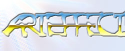
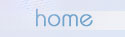

Tom Byron Geleneksel Deathmatch $enlikleri
Her 23-24 Mayis tarihleri arasinda, Tom Byron'in anisina duzenlenen Deathmatch
$enlikleri, bir puslu Cumartesi ak$ami ani bir kararla ba$ladi. Gorevimiz
tehlike hizinda SSG'nin ve Qube'un bilgisayarlari Cori+Heretic'in ikame ettigi
eve ta$indi. Telefonla FatalicA arandi, kisa (!) bir sure sonra o da geldi.
Qube'un ayba$i krizi geldigi icin Total Annihilation oynamaya karar verdik.
3 saat kadar TA'yi Win98.1900'un bug'li IPX driver'larinda cali$tirmak icin
tirmaladiktan sonra yapamayacagimizi hissedip kalan surede GTA (halk arasinda
Grand Theft Auto diye bilinir) oynadik. Bu arada TA'yi cali$tirmak icin verdigimiz
mucadele'nin MP3'unu (eveT!) cok yakinda sayfalarimizda bulabileceksiniz.
GTA'da deathmatch limiti 10'du ve saatlerce 3'te kaldigimiz icin oyunu oyle
bitirdik. Oyunda birinci 3 kill ile SSG, geri kalanlarsa 2 ila 1 arasinda
giden insanlardi.
Sabah 5'te karnimiz acikti ve di$ari cikip kapi kapi dola$ip yemek aradik.
I$kembe icip kofte yedik. Yemek guzeldi. Geri donerken ortaya iki goru$ atildi:
Uyumadan oynayabildigimiz kadar oynayalim miydi yoksa bir kac saat uyuyup
sonra kalkip devam mi edeydik? Ben her zamanki gibi uykulu oldugumdan uyuyalim
dedik, hem daha zinde oluruz deyiverdik. Eve geldik yattik. Mukemmel uyudum.
Qube, benim bi ara kalkip etrafa garip garip baktigimi soyluyor.. Saat 11:30
gibi uyandigimda Qube'un yatagi (Cori'nin deyimiyle "lahit") bo$tu. Eve bakindim
ortalarda yoktu. FatalicA korkutuk yatiyordu. Ben de benim aleti acip program
yazdim biraz (malum i$ guc). Saat 12:00 gibi Cori uyandi.. O kadar baara caara
muhabbet ettik FatalicA uyanmadi. Sonunda Cori "ulan FatalicA'ya bak herif
hic uyanmiyor" dedi ve FatalicA gozlerini acti..
Bir muddet sonra Qube geldi, yaninda 200MMX CPU, sucuk ve yumurta vardi.
Misler gibi bir kahvalti ettik. Cori, yumurtanin tekinden civciv ciktigi icin
bize katilmadi. Tang aldik tang ictik, orange + peach guzel oluyor. Bir de
dunden Sprite kaldigini farkettik onu da bir sure sonra bitirdigimizi hatta
"olm ben yarim koyuyorum!" "ama biz hic icmedik!" "ver lan $i$eyi hibino"
"bana bak senin umugunu sIkarIm" $eklinde tarti$malar oldugunu hatirliyorum...
Qube'un ayba$i krizi hala devam ediyordu ve yine TA denedik. Ben server oldum
ve en uzun TA session'ini o gun yaptik. Cori uzerindeki curse buyusu yuzunden
oyunun ortasinda koptu. Kalan ucumuzden ise oyunu allah kadar Millenium uretmi$
olan FatalicA kazandi.
Saat 16:00'ya yakla$iyordu Quake deneyelim dedik. Gorduk ki Win98.1900'un
IPX driverlari bir $ekilde Quake'te bile sorun cikartiyordu. DOS'tan oynamak
icin bir yarim saat tirmaladiktan sonra sezonun en hareketli en heyecanli
ve en zevkli deathmatch session'larindan birini gercekle$tirdik. Klasik map'imiz
olan CMANIA3'u oynadik. (Sicak deathmatch icin herkese tavsiye) Bileklerimizdeki
agri dayanilmaz hale geldiginde birakmaya karar verdik. Birinci SSG idi. Qube
ile Cori'nin skoru cok yakindi ama tahminim Qube ondeydi. FatalicA ise kafayi
beni oldurmeye taktigindan ve bunu shotgun'la ba$armaya cali$tigindan dolayi
sonuncu oldu.
Pazar gunu Saat 19:00 gibi Qube, FatalicA ve ben tapinaktan ayrildik. Pazartesi
gunu sanirim bir event oldu fakat ben Angora'li SSG gotune koydumun i$leri
yuzunden katilamadim... Bundan dolayi pazartesi gunu olanlari olayin tek $ahitleri
Qube ve Cori'nin agzindan dinliyoruz:
- Evet Qube,
- Ogleden sonra, Cori'yi aradim... SiliconValley'e gidildi, orada bir kesik
koni hesabi yapildiktan sonra SiLiCoN'dan Win98 Build 1998 alindi. Cori "in$allah,
bu sefer duzgun olacak" dedi. Bu sonun ba$langiciydi... 9 sularinda hizla
tapinaga geri donuldu. Ilk etapta 1998 duzgun kurulamadi. Cori'nin duzgun
kurmasinin ardindan dosyalar diger makinalara transfer edildi ve 3. deneme
sonunda ba$ardik.. Sonra BLoodY, Cori ve Qube TA'ya ba$ladi... Herkes hayvan
gibi oldugu bir sirada, Cori bana saldirirken kitlendi...
Cori araya girer,
- Boylece analmi$ oluyoruz ki Win98 kurulu$u sIchI$'tI...
- Cori kesinlikle hakli ki Win98'in finalden onceki betasi boyle oluyorsa
finali nasil oluyordur...
- Bundan dolayi NT kurmanin iyi bir$ey olduguna karar verdik...
- Cori'nin Neyiborusu cali$miyordu..
- Bizdeki NT version'i sorunluydu...
- Bill Gates'i bir kez daha cok iyi bir $ekilde andik... Hic bi boku saglam
diil... Hmm..
- Hic bi yere baglanamiyo lean..
- Senin modem dandik...
- Lan ondan mi ki? Sicharim...
- Dun ak$amki macerayi ancak Cori anlatabilir... Ben gelmedim...
- Dun ak$am neler oldu? $ey yaa Ahmet'le geldiler FatalicA ile... Ahmetti
onun ismi degil mi? Benim kasa hakkinda bi suru $ey sordu... Bu arada Outlaws'un
muzikleri e$liginde NT'yi yeniden install ettik... Bu sefer NT'nin network'unu
setup esnasinda kurmaya cali$tik ve oldu... Sonradan kurunca olmuyordu. Bu
sefer ben NT'yi 5. kez install ettim.. Bu sefer oldu... Ondan sonra zaten
cok gec olmu$tu saat 3 falan... Bunlar eve gittiler ben downloadlari bitirdim
o kadar...
SSG sozu bitirmek icin konu$ur:
- Peki te$ekkur ederiz Qube ve Cori bu seviyeli repertuar (Qube ve Cori,
roportaj deyince anlamiyolar boyle diyorum oluyor) icin...
Sonra ne mi oldu? FatalicA bir cozum buldu ve OSR2 kurark IPX sorunlarimizi
hallettik. Kalan gunler boyunca ba$imizdan gecen event'ler $unlardi:
Kalan zamani ise surekli Total Annihilation oynayarak geciren aRtEffECt elemanlari
event'in sonunda darmaduman olmu$ kul kokan salondan hazin bir torenle ayrildilar.
Hizli bitirmek istemiyorum report'u o yuzden $imdi bitiriyorum. Bitti.
|
|
|
|
|
|
|
|
|
|
|
|||||
|  |
|
|
||||
|
|
|
|
|
|||
|
|
||||||
|
|
 |
|
||||
|
|
|
|||||
|
|
|
|||||
|
|
|
|||||
|
|
|
|||||
|
|
|
|||||
|
|
|
|||||
|
|
|
|||||